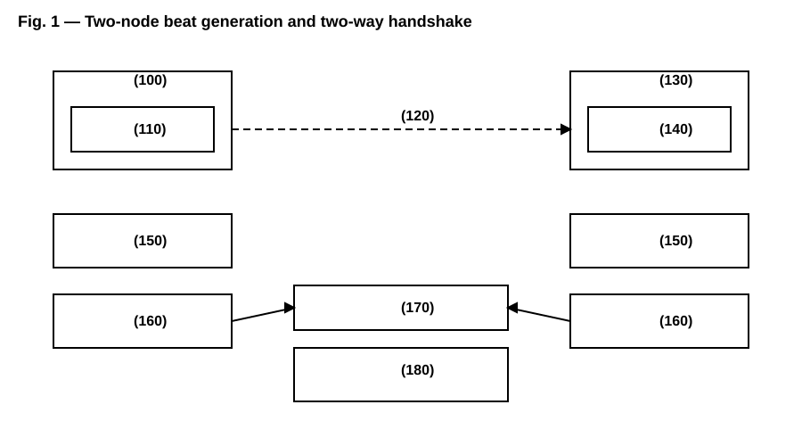
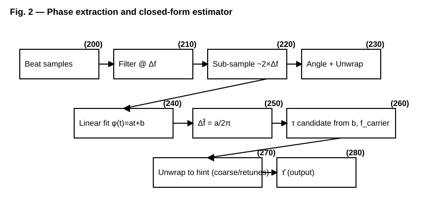
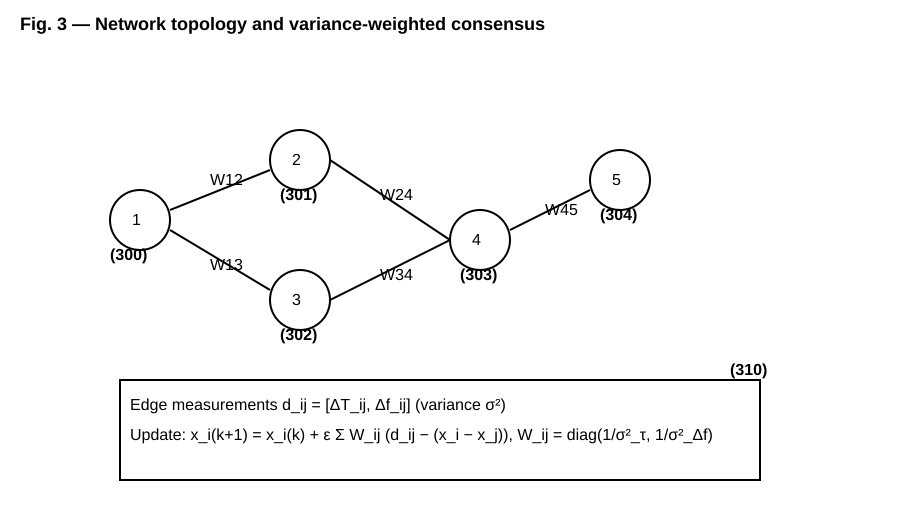
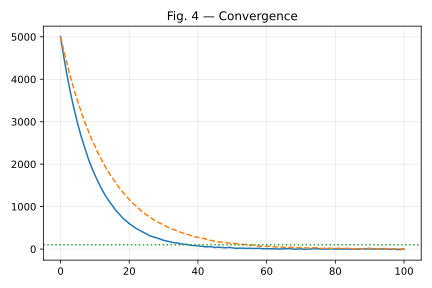
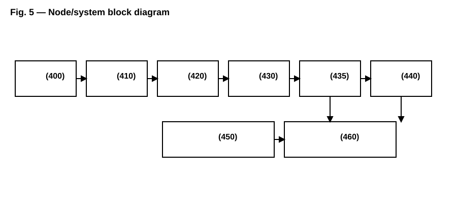

System and Method for Distributed Wireless Synchronization Using Chronometric Interferometry with Intentional Carrier Frequency Offset
Applicant/Assignee: Shannon Labs, Inc. (Delaware C‑Corp) Inventor: Hunter Bown
Priority Claim: This application claims priority to U.S. Provisional Patent Application filed on September 19, 2025, entitled “System and Method for Distributed Wireless Synchronization Using Chronometric Interferometry with Intentional Carrier Frequency Offset,” the entirety of which is incorporated herein by reference.
Field of the Invention
Wireless time and frequency synchronization via chronometric interferometry using intentional carrier frequency offsets to generate beat signals encoding precise delay and frequency‑difference information.
Background
Conventional literature and standards teach elimination of frequency offset as an impairment. GPS/GNSS, IEEE 1588 PTP/NTP, and fiber‑based methods have important limitations in wireless, indoor, or contested environments. A need exists for masterless, GPS‑independent synchronization achieving sub‑nanosecond precision using commercial oscillators.
Summary
The Bown Driftlock Method intentionally introduces and maintains a small Δf between nodes. Simultaneous transmit/receive yields a beat signal at Δf whose phase evolution encodes propagation delay and oscillator frequency difference. A closed‑form estimator over microsecond windows recovers τ and Δf without iterative search. Two‑way exchange separates geometric delay from clock bias. A variance‑weighted distributed consensus aligns all nodes without a master reference, using a spectrally chosen step size and optional Chebyshev acceleration for rapid convergence.
Brief Description of the Drawings

Fig. 1. Two‑node beat generation and two‑way handshake ((100)–(180)).

Fig. 2. Phase extraction and closed‑form estimator pipeline ((200)–(280)).

Fig. 3. Network topology and variance‑weighted consensus ((300)–(310)).

Fig. 4. Convergence example (timing RMS vs. iteration). Illustrative only.

Fig. 5. Node/system block diagram ((400)–(460)).
Detailed Description
I. Theory of Operation
Nodes i and j use carriers fi and fj=fi+Δf. Simultaneous transmit/receive produces a beat at Δf with phase φbeat(t) = 2πΔf (t − τ) + (θi − θj) + 2π fi τ. Linear fitting of unwrapped phase yields slope a ≈ 2πΔf and intercept b from which τ is obtained in closed‑form using known carrier terms.
II. Two‑Way Handshake
Forward and reverse measurements yield (τ̂AB, Δf̂AB) and (τ̂BA, Δf̂BA); δt = 0.5(τ̂AB − τ̂BA); τgeo = 0.5(τ̂AB + τ̂BA).
III. Estimation Pipeline
Filter near Δf; sub‑sample (~2×Δf); angle and unwrap; linear fit; obtain Δf̂ and τ candidates; unwrap τ via coarse preamble and/or multi‑carrier retunes; average across carriers with weights proportional to frequency squared.
IV. Distributed Consensus
For graph G=(V,E), edge measurements dij with variances σ² update xi=[ΔTi, Δfi] via xi(k+1)=xi(k)+ε Σ Wij(dij−(xi−xj)), with Wij=diag(1/σ²τ,1/σ²Δf). A spectral step size ε≈c/λmax(L) ensures stability; optional Chebyshev acceleration improves convergence. Zero‑mean projection may be applied.
V. Embodiments and Parameters
Carriers: ISM/licensed, extensible to audio→optical; Δf≈1–10 MHz; T≈10–20 µs; sub‑sampling rate≈2×Δf; calibration modes: none/loopback/perfect; robustness to mobility and packet loss through periodic updates and variance‑weighted consensus.
Claims
Condensed Claims (US — 25)
- A method for synchronizing a pair of wireless communication nodes, comprising: intentionally generating and maintaining a carrier frequency offset Δf between the nodes; simultaneously transmitting and receiving signals at respective carrier frequencies that differ by Δf so as to form a beat signal at frequency Δf; extracting a phase of the beat signal over an observation window; computing, via a closed‑form estimator applied to the extracted phase, a propagation delay τ and a frequency difference between the nodes; and performing bidirectional measurements and combining forward and reverse delays to determine a geometric delay and a clock bias, wherein the frequency offset Δf is a synchronization feature and is not corrected as an impairment.
- A wireless synchronization apparatus, comprising: a programmable transceiver configured to emit and receive signals at carrier frequencies that differ by an intentional offset Δf; an analog‑to‑digital converter configured to sub‑sample the beat signal at a rate approximately twice Δf; and one or more processors configured to extract a beat phase, compute τ and Δf via a closed‑form estimator, and execute a two‑way handshake to separate geometric delay from clock bias.
- A distributed synchronization method for a network of nodes, comprising: for edges (i, j) in a communication graph, performing pairwise measurements that produce delay and frequency‑difference observations d_ij with variances; and iteratively updating per‑node states x_i = [ΔT_i, Δf_i] according to x_i(k+1) = x_i(k) + ε Σ_j W_ij (d_ij − (x_i(k) − x_j(k))), where W_ij = diag(1/σ²_τ, 1/σ²_Δf) are inverse‑variance weights and ε is selected from a Laplacian spectrum of the graph.
- A non‑transitory computer‑readable medium storing instructions that, when executed by one or more processors, cause a device to perform any of the methods of claims 1 or 3.
- The method of claim 1, wherein Δf is between approximately 1 MHz and approximately 10 MHz and is approximately one‑tenth of a channel bandwidth.
- The method of claim 1, wherein an observation window is between approximately 10 microseconds and approximately 20 microseconds, and a sub‑sampling rate is approximately 2×Δf.
- The method of claim 1, further comprising generating a coarse wideband preamble to obtain an unambiguous delay hint for phase unwrapping.
- The method of claim 1, further comprising performing multi‑carrier retunes to produce synthetic wavelengths for robust unwrapping.
- The method of claim 8, wherein multi‑carrier unwrapping uses Chinese Remainder Theorem constructions.
- The method of claim 1, wherein τ is computed from a linear fit of unwrapped beat phase without iterative search.
- The method of claim 1, wherein bidirectional measurements compute a clock bias δt = 0.5(τ̂_AB − τ̂_BA) and a geometric delay τ_geo = 0.5(τ̂_AB + τ̂_BA).
- The method of claim 1, further comprising weighting multi‑carrier τ estimates proportional to carrier frequency squared.
- The apparatus of claim 2, wherein the analog‑to‑digital converter includes anti‑alias filtering and dynamic range sufficient to capture the beat signal at Δf.
- The apparatus of claim 2, wherein oscillators are temperature‑compensated crystal oscillators with stability between 2 and 20 parts per million.
- The apparatus of claim 2, capable of achieving 22 picosecond synchronization precision substantially better than existing GPS‑based systems.
- The method of claim 3, further comprising enforcing zero‑mean constraints across nodes for both timing and frequency states.
- The method of claim 3, wherein ε = c/λ_max(L) with 0 < c < 1 for stability margin and rapid convergence.
- The method of claim 3, further comprising Chebyshev polynomial acceleration to reduce convergence time.
- The method of claim 3, supporting asynchronous updates in which a randomly selected node performs the variance‑weighted update at each iteration.
- The method of claim 3, achieving substantially improved network‑wide precision relative to conventional microsecond‑class methods under representative SNR and connectivity conditions.
- The method of claim 1, wherein Δf avoids integer relationships with sampling clocks to minimize aliasing.
- The apparatus of claim 2, further comprising calibration modes including none, loopback, and perfect to account for hardware delays.
- The method of claim 1, further comprising super‑resolution spectral methods to separate multipath returns and weighting strategies to prefer direct‑path estimates.
- The method of claim 3, applied to random geometric graph topologies and exhibiting practical O(log N) convergence scaling with network size.
- The method of claim 1, wherein carriers span audio through optical regimes and the beat‑phase principles are applied across said regimes.
- The method of claim 3, wherein consensus weights are updated online from measurement residual statistics.
- The apparatus of claim 2, wherein a medium access control schedule deterministically staggers forward and reverse measurements across nodes.
- The method of claim 1, wherein Δf is adaptively selected based on SNR and bandwidth to optimize estimator variance.
- The method of claim 1, wherein measurement offsets Δt are scheduled to average jitter and oscillator phase noise.
- The apparatus of claim 2, wherein a transceiver frequency resolution is at least 1 Hz.
- The apparatus of claim 2, operating in industrial, scientific and medical bands.
- The apparatus of claim 2, operating in licensed cellular spectrum.
- The method of claim 3, further comprising convergence monitoring using Laplacian eigenvalue telemetry.
- The method of claim 1, comprising coarse estimator variance floors to stabilize unwrapping at low SNR.
- The method of claim 3, further comprising bounds on per‑iteration state increments for robustness.
- The method of claim 1, maintaining performance under node mobility up to approximately 20 meters per second.
- The method of claim 1, maintaining synchronization performance under up to approximately twenty percent packet loss.
- The method of claim 8, wherein synthetic wavelength selection maximizes unwrapping margin subject to bandwidth constraints.
- The apparatus of claim 2, wherein the processor executes instructions stored on the non‑transitory computer‑readable medium of claim 4.
- A method substantially as described herein with reference to the accompanying description and any one of the examples.
Abstract
Chronometric interferometry for wireless synchronization using intentionally offset carrier frequencies (Δf) to generate a beat signal whose phase encodes both propagation delay and true frequency difference. A closed‑form estimator applied to beat‑phase evolution over microsecond windows recovers τ and Δf without iterative search. Bidirectional measurements separate geometric delay from clock bias. A variance‑weighted distributed consensus with spectrally chosen step‑size and optional Chebyshev acceleration aligns all nodes without a master reference, converging rapidly to sub‑nanosecond network precision.
Reference Numerals
(100) Node A; (110) Transmitter at f1; (120) Wireless link / propagation delay τ; (130) Node B; (140) Transmitter at f2=f1+Δf; (150) Beat detector; (160) Phase extraction; (170) Measurement exchange; (180) Two‑way resolver; (200) Beat samples; (210) Filter; (220) Sub‑sampling ADC; (230) Angle+Unwrap; (240) Linear fit; (250) Δf̂; (260) τ candidate; (270) τ unwrapping; (280) τ̂; (300)–(304) Nodes; (310) Consensus rule; (400) RF; (410) Mixer; (420) ADC; (430) DSP; (440) Estimator; (450) Consensus; (460) MAC.